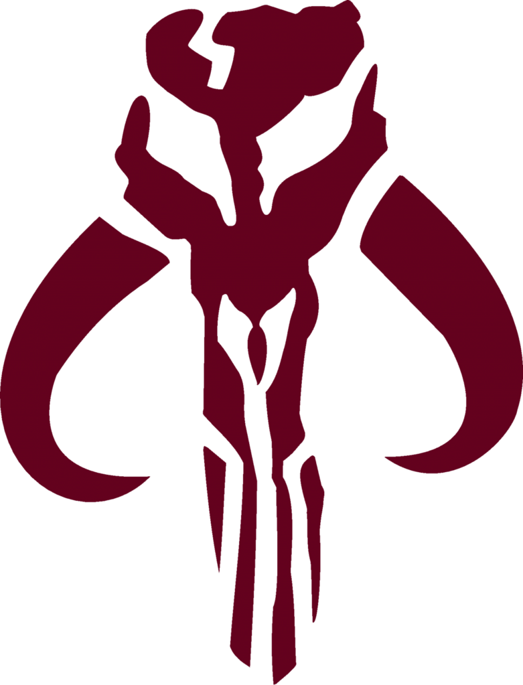
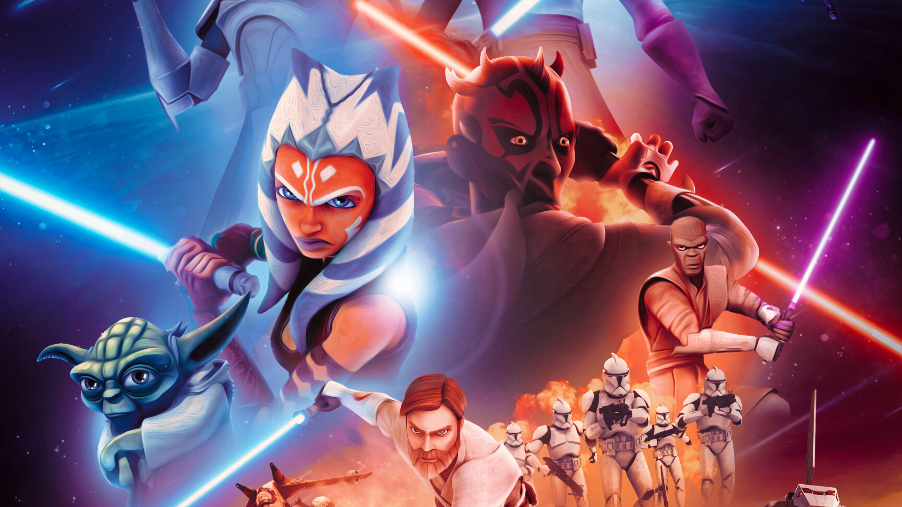

Biographie
"Clone Wars" est une série animée télévisée qui a été créée par George Lucas et développée par Dave Filoni. La série est une extension de l'univers Star Wars, se situant chronologiquement entre les épisodes II et III de la saga cinématographique. "Clone Wars" a été produite par Lucasfilm Animation et diffusée pour la première fois sur Cartoon Network en 2008.
La série compte sept saisons et 133 épisodes, qui ont été diffusés de 2008 à 2020.
La série suit les aventures des Jedi Anakin Skywalker, Obi-Wan Kenobi, et Ahsoka Tano, ainsi que de l'armée clone de la République, dans leur lutte contre les forces séparatistes dirigées par le Comte Dooku, le Général Grievous et l'énigmatique Dark Sidious. Avec son animation époustouflante, ses histoires épiques et ses personnages bien développés, "Clone Wars" est une série qui a conquis les fans de Star Wars du monde entier.
